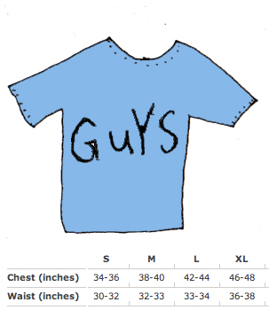

About the unisex long-sleeve tee.

A great tee for summer! (And as a base layer under something comfy in the winter!) The summer tee is a sheer, slightly loose version of the classic American Apparel tee. We think you'll love it! Technical Details:
|